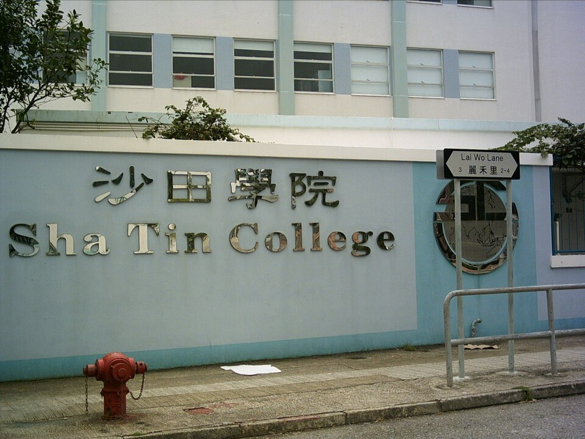

샤틴 칼리지(沙田學院) 교명 간판과 라이워레인 주소 표지 · 사진: Typhoonchaser / Wikimedia Commons, CC BY-SA 3.0
샤틴 칼리지(Sha Tin College) — 신계에 하나뿐인 ESF 중등, 학교가 사는 동네를 정합니다
· 샤틴 칼리지(이 글)와 샤틴 주니어 스쿨은 옆 건물에 있는 다른 학교입니다. 전자는 중등(Year 7~13), 후자는 ESF 초등입니다.
· ESF의 "아일랜드" 3교 — 아일랜드 스쿨·웨스트 아일랜드 스쿨·사우스 아일랜드 스쿨 — 와도 다른 학교입니다. ESF는 학교 이름이 아니라 재단 이름입니다(→ ESF 구조 설명).
· 이 학교는 1982년 구룡통의 KGV 캠퍼스 안에서 "샤틴 분교"로 출발한 것으로 알려져 있습니다. 그래서 아주 오래된 자료에는 구룡 주소가 적혀 있는 경우가 있습니다. 현재 주소는 신계 포탄입니다.
1. 어떤 학교인가 — 분교로 시작해 신계의 단 하나가 된 학교
샤틴 칼리지는 1982년, 구룡통에 있는 ESF 학교 KGV(King George V School)의 캠퍼스 안에 "샤틴 분교(Shatin Annexe)"로 문을 연 것으로 알려져 있습니다. 1985년에 신계 포탄 라이워레인(麗禾里) 3번지 현재 자리로 옮기면서 지금의 교명을 쓰게 된 것으로 전해집니다. 위 사진의 표지판에 적힌 Lai Wo Lane이 바로 그 주소입니다.
이 출발 방식이 ESF에서 드문 일은 아닙니다. 사우스 아일랜드 스쿨도 아일랜드 스쿨의 분교에서 출발했습니다. 학생이 늘면 분교를 내고, 자리를 잡으면 독립시키는 방식으로 ESF의 학교 지도가 완성돼 온 것입니다. 다만 샤틴 칼리지에는 다른 학교에 없는 조건이 하나 붙습니다. ESF 중등학교 가운데 신계에 있는 학교가 이곳 하나라는 점입니다.
학년은 Year 7부터 Year 13까지(만 11~18세)이고, 초등 과정은 없습니다. 과정은 세 구간으로 나뉘는 것으로 안내됩니다.
- Year 7~9 — IB MYP(중등 과정)
- Year 10~11 — IGCSE 2년 코스
- Year 12~13 — IB 디플로마(DP) 또는 IB 커리어 관련 프로그램(CP) 선택
즉 영국식 시험(IGCSE)을 가운데 끼워 두고 앞뒤를 IB로 감싼 구조입니다. 홍콩의 ESF 중등학교들이 대체로 비슷한 틀을 쓰지만, 마지막 2년에 무엇을 열어 두는지는 학교마다 조금씩 다릅니다. (운영 과정·학년 구성은 바뀔 수 있으니 학교 요강을 직접 확인하세요.)
2. 옆 건물에서 올라옵니다 — 그래서 "편입"의 의미가 다릅니다
샤틴 칼리지 바로 옆에는 샤틴 주니어 스쿨(Sha Tin Junior School)이 있습니다. 1988년에 옆자리에 문을 연 ESF 초등학교로, 수영장을 비롯한 일부 시설을 두 학교가 함께 쓰는 것으로 알려져 있습니다. 그리고 샤틴 주니어 학생 대부분이 Year 6을 마치고 그대로 옆 건물인 샤틴 칼리지로 올라가는 구조로 소개됩니다.
이 한 문장이 주재원 가정에 주는 뜻은 큽니다. Year 7 자리의 상당 부분이 미리 채워진 상태에서 외부 지원이 시작된다는 뜻이기 때문입니다. ESF는 중등 입학을 중앙에서 받고 우선순위 범주를 두는 것으로 안내되므로, 외부에서 들어가려는 가정은 지원 시기와 우선순위 조건이 동시에 맞아야 합니다(→ 아일랜드 스쿨 편에서 다룬 ESF 중등 지원 구조와 같은 맥락입니다).
정리하면 이 학교로 들어가는 길은 현실적으로 세 갈래입니다.
| 상황 | 들어가는 길 | 먼저 할 일 |
|---|---|---|
| 아이가 초등 나이 · 발령이 길다 | 옆 샤틴 주니어 초등으로 먼저 들어가 연계로 올라가는 길 | 초등 쪽 지원 시기부터 확인 |
| 아이가 Year 7이 되는 해 | ESF 중등 지원 기간에 외부 지원 | 발령 통보보다 지원 기간이 먼저 올 수 있음 |
| Year 8 이상 중간 합류 | 그 학년에 자리가 날 때만 | 학년별 결원 문의 + 대안 학교 동시 준비 |
세 번째 줄이 현실입니다. 신계에서는 ESF 중등 대안이 사실상 없기 때문에, 중간 학년 자리가 나지 않으면 홍콩섬·구룡 학교로 통학하거나 다른 계열 학교를 보셔야 합니다. 그래서 이 학교는 "되면 좋고"가 아니라 "되는지 먼저 확인하고 집을 구하는" 순서로 접근하셔야 합니다.
3. 홍콩 ESF 중등 5교 — 어디에 있는가로 먼저 갈립니다
ESF 중등학교를 지도 위에 올려 보면 선택이 훨씬 빨라집니다.
| 학교 | 위치 | 학년 | 마지막 2년 |
|---|---|---|---|
| 샤틴 칼리지 (이 글) | 신계 포탄 | Year 7~13 | IB 디플로마 또는 CP |
| 아일랜드 스쿨 | 홍콩섬 미드레벨 | Year 7~13 | IB 디플로마 또는 CP·BTEC |
| 웨스트 아일랜드 스쿨 | 홍콩섬 포크풀람 | Year 7~13 | IB 디플로마·CP·BTEC 등 |
| 사우스 아일랜드 스쿨 | 홍콩섬 애버딘 | Year 7~13 | IB 디플로마·CP·BTEC |
| KGV | 구룡 호만틴 일대 | Year 7~13 | IB 디플로마 계열 |
표를 보시면 바로 보입니다. 넷은 홍콩섬·구룡, 하나는 신계입니다. 그러니까 ESF 중등을 놓고 고민하시는 가정에서는 "학교를 고른다"가 아니라 "섬 쪽에서 살 것인가, 신계에서 살 것인가"가 사실상 첫 질문이 됩니다. 마지막 2년의 선택지는 다섯 곳이 비슷하므로, 그것만으로는 잘 갈리지 않습니다. (학년별 개설 과정은 해마다 달라질 수 있으니 각 학교 안내를 확인하세요. ESF 계열이 아닌 홍콩의 다른 학교들은 HKIS·CIS·CDNIS·켈릿·해로 홍콩 편을 참고하세요.)
4. 한국(주재원) 학생이 겪는 어려움 — 통학과 두 번의 2년 코스
첫째, "회사는 센트럴, 학교는 샤틴" 조합입니다. 한국 주재원 가정의 근무지는 센트럴·완차이·침사추이 쪽인 경우가 많습니다. 그런데 아이 학교가 신계라면 둘 중 하나를 희생해야 합니다. 아이의 통학 시간을 늘리든지, 부모의 출퇴근 시간을 늘리든지입니다. 저는 아이 쪽 시간을 지키시라고 말씀드립니다. 편도 한 시간이 늘어나면 하루 두 시간이 사라지고, 그 두 시간은 기한이 긴 과제와 방과후 활동에서 먼저 깎이기 때문입니다(→ 통학·스쿨버스·숙제·과제 관리).
둘째, Year 10 전후 합류입니다. 이 학교의 고등 구간은 2년짜리 묶음이 연달아 두 번 옵니다.
| 구간 | 평가 방식 | 중간 합류 난이도 |
|---|---|---|
| Year 7~9 (MYP) | 기준표(루브릭) 채점 · 과제 중심 | 비교적 수월 |
| Year 10~11 (IGCSE) | 과목 선택 고정 · 외부 시험 대비 | 가장 위험 |
| Year 12~13 (DP·CP) | 2년 누적 · 내부 평가와 기한 관리 | 중간 합류 어려움 |
셋째, MYP의 기준표 채점입니다. Year 7에 들어온 한국 학생이 가장 먼저 놀라는 지점입니다. 답이 맞았는데 점수가 낮게 나옵니다. MYP는 "무엇을 썼는가"만이 아니라 "어떻게 접근하고 설명했는가"를 기준표로 나눠 채점하기 때문입니다. 수학도 식만 적으면 깎입니다(→ 형성평가·총괄평가·성적표 읽는 법).
5. 그래서 이렇게 준비합니다 — 그리고 신계라는 조건
준비는 아이가 들어갈 구간에 따라 다릅니다.
- Year 7로 들어간다면 — 영어 글쓰기의 구조부터입니다. 문단을 나누고 근거를 붙이는 연습, 그리고 수학·과학의 영어 용어를 미리 정리합니다. MYP는 서술로 설명하는 분량이 많습니다.
- Year 10으로 들어간다면 — 과목이 열려 있는지부터 확인하시고, 합류 전 여름에 IGCSE 과목별 출제 형식을 한 번 훑어 두시는 것이 좋습니다(→ IGCSE 과목 선택).
- Year 12로 들어간다면 — 디플로마와 CP 중 무엇으로 갈지를 먼저 정해야 합니다. 과목 조합과 내부 평가 일정이 거기서 갈립니다(→ IB 점수 구조·과목 신청).
그리고 신계라는 조건이 과외에는 오히려 유리하게 작용합니다. 홍콩은 한국과 시차가 1시간이라, 아이가 하교하고 집에 와서 저녁을 먹은 뒤 한국 선생님과 수업하는 시간대가 자연스럽게 맞습니다. 통학에 시간을 많이 쓰는 아이일수록 이동 없는 화상수업이 유리합니다. 오프라인 학원을 다시 한 시간 왕복할 여유가 없기 때문입니다. 저희는 학교 과제를 함께 여는 방식으로 수업합니다. 문제집을 따로 푸는 것보다 아이가 지금 막힌 지점을 직접 보는 쪽이 훨씬 빠릅니다.
관련 검색어: 샤틴칼리지 · 샤틴국제학교수학과외 · 샤틴국제학교영어과외 · 홍콩국제학교과외 · ESF중등입학
정리
샤틴 칼리지는 1982년 KGV 캠퍼스의 분교로 출발해 1985년 신계 포탄으로 옮긴 것으로 알려진 ESF 중등학교이고, Year 7~9 MYP → Year 10·11 IGCSE → Year 12·13 IB 디플로마 또는 CP 구조로 안내됩니다. 이 글에서 꼭 가져가실 것은 학교 정보 하나가 아니라 "ESF 중등 다섯 곳 중 신계에 있는 학교는 여기 하나이고, 그래서 이 학교를 선택지에 넣는 순간 사는 동네가 먼저 정해진다"는 것입니다. 거기에 옆 건물 초등에서 올라오는 연계 구조가 더해져, 중간 학년 편입은 자리가 나야 가능합니다. 아이가 지금 Year 몇에 해당하는지에 따라 당장 할 일이 다르니, 30분 무료 수업으로 현재 위치부터 확인해 보시기 바랍니다. (학년 구성·입학 절차·통학 노선은 바뀔 수 있으니 반드시 학교와 ESF 안내를 직접 확인하세요.)